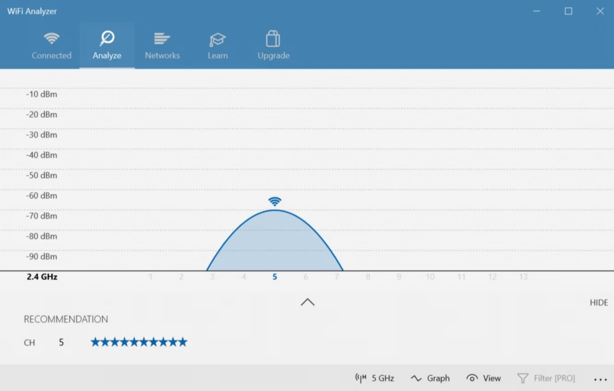

Free Diagnostics Tools for Windows
By installing these free programs you'll be able to diagnose what is wrong with your PC.

Computers are known to break down when we most need them, sometimes we don't know what its causing the slowdowns or graphical problems, but sometimes it can be as easy as a faulty drive or old driver. It can be really long or expensive to fix your PC in a shop.
Here are some of the programs.
HwInfo
HWiNFO is an all-in-one solution for hardware analysis and monitoring supporting a broad range of OS's, its really usefull to monitor your system sensors.
CrystalDiskInfo
A diagnostic software for your storage drives. It gives you a complete overview of the state of your data drives, including HDDs, SSDs, and USB drives. You can use the app to monitor the temperature, spin-up time, uptime, and error rates of your drives. All these factor into an overall "health score" that lets you know how your drive is doing.
WinDirStat
WinDirStat is a must-have application for anyone wanting a visual guide to their storage. WinDirStat stands for "Windows Directory Statistics", and it does exactly what the name promises. WinDirStat scans your data drives and tells you how much space is used up by various folders and files, all displayed in a neat tree-based hierarchy and a detailed graph view. The bigger the file or folder is, the larger the square is on the graph.
WiFi Analyzer
WiFi Analyzer is a free tool that does exactly what its name says: it analyzes your Wi-Fi network's setup to see whether your wireless channel is interfering with other nearby Wi-Fi networks. After the analysis, it will recommend a channel setting for you.
PixelHealer
A software diagnostic tool you can try using to revive dead pixels on your display, this may not always work, depends on your display technology.
MalwareBytes
A Anti-virus but it's fast, efficient, and free, which is all anyone can ask for. It's mainly designed to target malware but it can solve some virus related bugs on your device.
Windows Tools
There are diagnostic tools built in to Windows some examples are "Performance Monitor", "Reliability Monitor", "Resource Monitor", "Windows Memory Diagnostic" and Windows Troubleshooter.